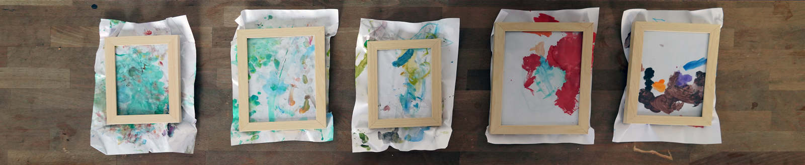

pequeno processo civilizatório #2
pequeno processo civilizatório #2
(small civilizatory process #2)
2019
série de infinita (never ending series)

emoldurei os desenhos de minha filha como alegoria do gesto civilizatório. como uma criança, os desenhos não cabem no quadro: seria preciso constrangê-los no seu lado mais fértil, no seu lado onde mais nos tem a ensiar (i framed my daughter's drawings as an alegory of the civilizatory process. as a child, the drawings don’t fit the frame: would be necessary constrain it in its most fertile part, in its part that it has to teach us the most).